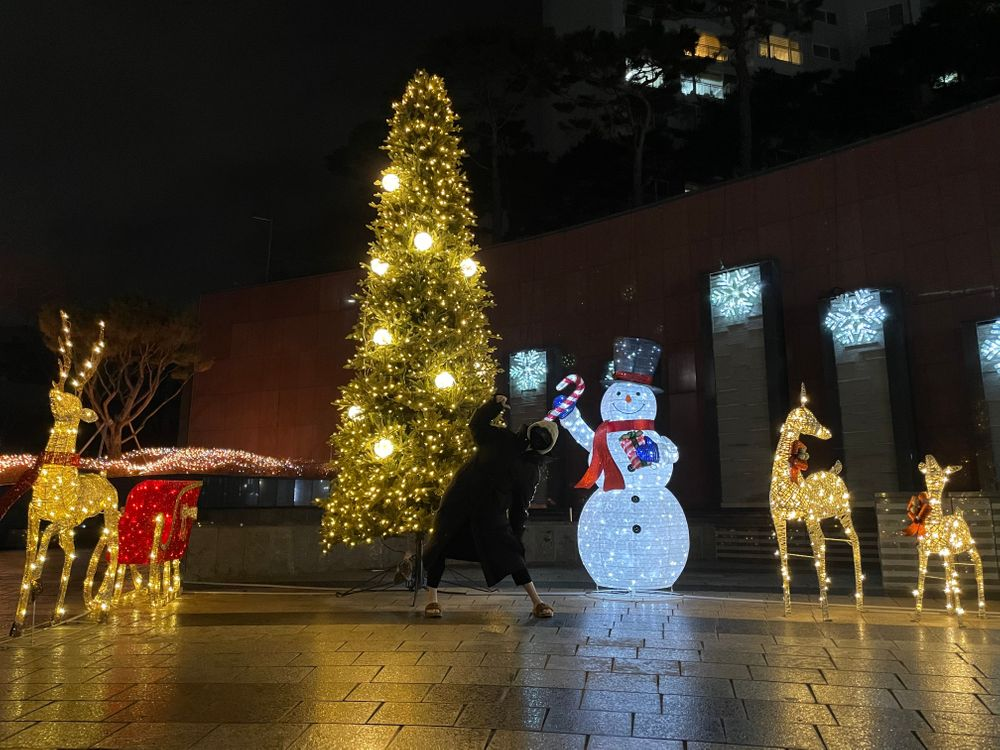
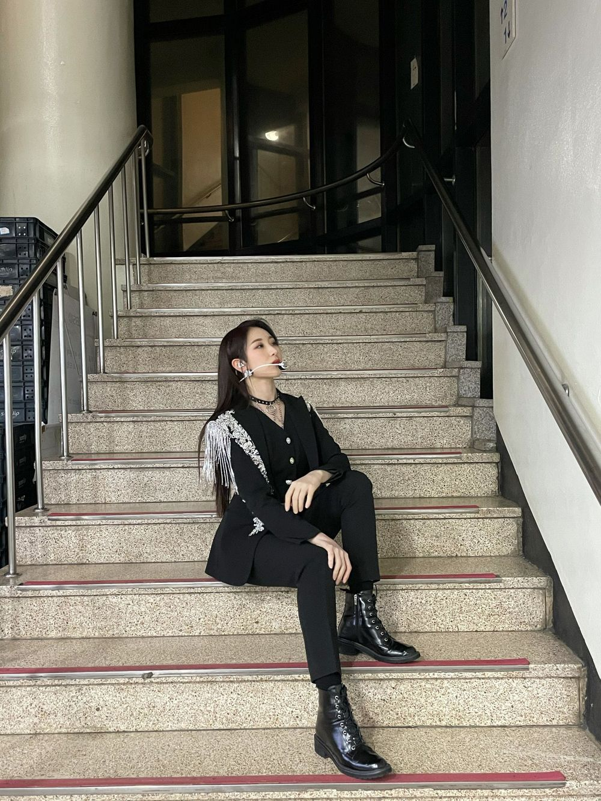

컬러체인지의 시기가 돌아온 것 같아요...
아
헤어 컬러 아니구요 ㅎㅎ
제가 좋아하는 색...
이번에는 어떤 색 일 것 같나요...?
재미삼아 You퀴즈??( 퀴즈를 푸시겠습니까? 라는 뜻 )
Q1. 채연이가 요즘 빠진 색을 고르시오 ( 난이도 중상? )
A. 베이지, 브라운
B. 버건디
C. 그레이
D. 블랙, 화이트
E. 남색
Q2. 채연이가 어제(12/27) 먹은 통조림은? ( 난이도 상 )
A. 골뱅이
B. 후르츠 칵테일
C. 참치
D. 옥수수콘
E. 황도
